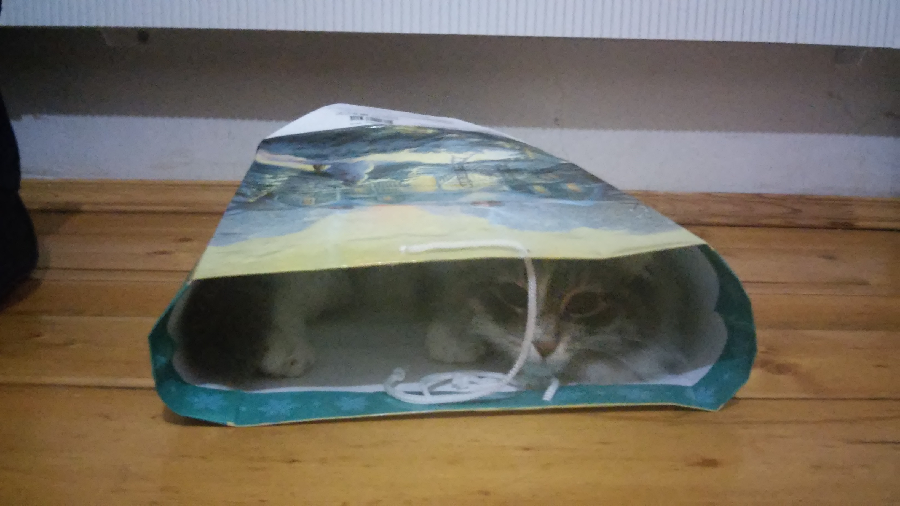

Всем привет!
Расскажу Вам немного о своём коте.

Кота зовут Василий и ему уже целых 9 лет.
Василий очень любит кушать.
Но, к сожалению, у Василия есть проблемы с пищеварением :(
По рекомендации ветеринара - котика стали кормить влажным кормом для кошек с чувствительным пищеварением PERFECT FIT.

Василий любит:
- Гулять
- Играть
- Кушать
- Спать
Факты о Василии:
- Василий может спать целый день. Но это не значит, что он ленивый! Он точно также может целый день носиться по дому. Возможно, у него где-то есть тумблер, который переключает эти режимы, но я не знаю где он :)
- Василий кушает огурцы!
- Василию нужно много места для комфортного сна. Если Вы ляжете с ним на диван - он упрётся в Вас лапами и будет пытаться скинуть.